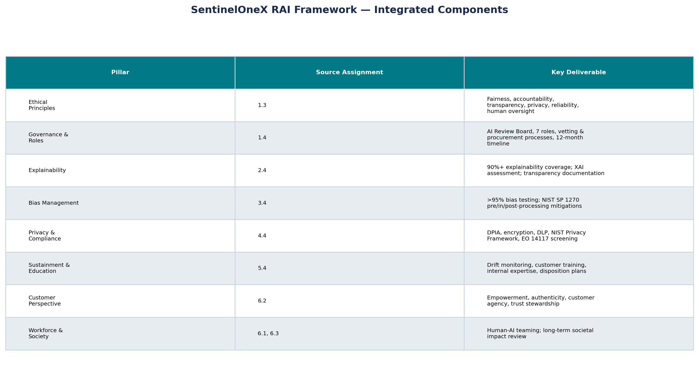

AIML-510-01 Capstone | Integrated RAI Program Design
A comprehensive, ready-to-use Responsible AI framework for SentinelOneX Security—a fictional cybersecurity AI company. This capstone integrates six workshops of AIML-510 coursework into actionable governance: ethical principles, organizational structure, lifecycle controls, risk evaluation, metrics, training, and long-term sustainment including disposition.
Fairness, accountability, transparency, privacy, reliability, human oversight—plus customer empowerment and authenticity (WS 6.2).
AI Review Board, 7 accountable roles, internal vetting and vendor procurement workflows (Assignment 1.4).
Phased stand-up from policy definition through training, audit, and maturity review.
Explainability, bias (NIST SP 1270), privacy/compliance, user education, workforce and societal impact.
Markkula ITEC-aligned stages through monitor/sustain, periodic review, and responsible model retirement.
>95% bias pass, <5% FPR, 100% critical human review, role-based employee RAI training program.

ML scoring for endpoint protection with explainability and adversarial testing requirements.
AI-ranked alerts with analyst override and bias monitoring across customer segments.
Human-in-the-loop containment suggestions—never fully autonomous critical actions.
Standardized procurement rubric with IP, privacy, and EO 14117 adversary screening.
Key artifacts from Assignments 1.3–6.5 that build this integrated framework: